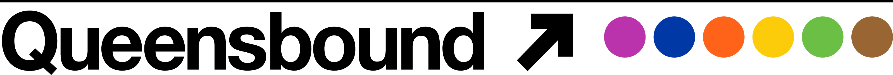

Telling the Stories of Queens
QUEENSBOUND is a collaborative audio project founded in 2018 that seeks to connect writers across the borough, showcase and develop a literature of Queens, and reflect the borough back to itself. This is poetry for the people online and in public spaces.
For more info, contact QUEENSBOUND founder KC Trommer.
Click on a green subway stop to hear a poem.
© 2020 QUEENSBOUND. Site by Lexi.